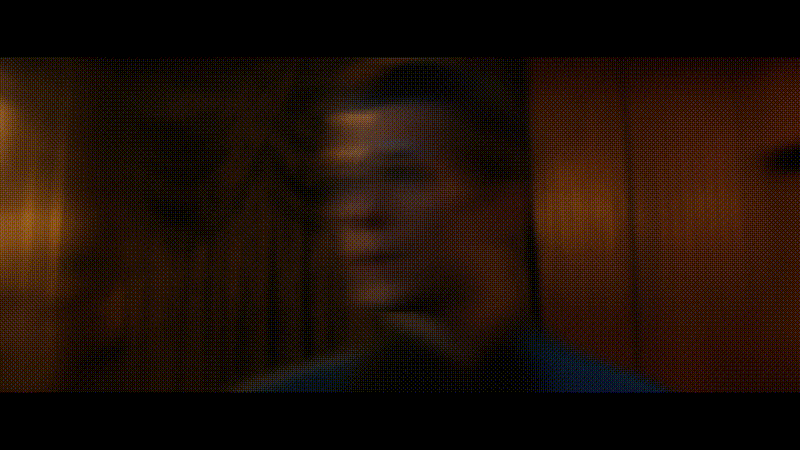
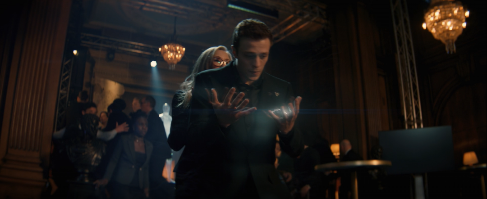
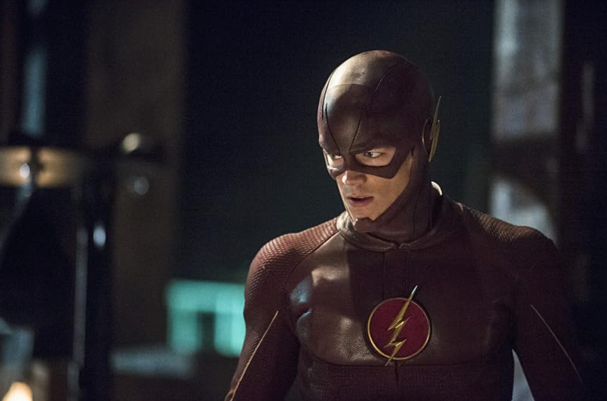

随着漫威剧集《幻视任务》的热播，一位名为托马斯（代号急速）的新英雄正式进入大众视野。

作为绯红女巫旺达与幻视的转世之子，他的出现不仅增加了年轻复仇者的拼图，更让无数漫威影迷开始思考一个有趣的问题：这位漫威新一代极速者，和DC宇宙中那位大名鼎鼎的“世上最快之人”闪电侠巴里·艾伦相比，究竟有何不同？

魔法造物 vs 科学意外
漫威急速
他并非传统意义上的变种人或实验体，而是由绯红女巫用混沌魔法创造的“双胞胎儿子”之一。在《旺达幻视》中消失后，他的灵魂在《阿加莎：黑暗日记》结尾被引导至一名溺水少年托马斯的体内得以重生。正如奥创在剧中所言：“你真是女巫的亲儿子。”他的速度天赋继承自舅舅快银，但本质上是魔法与现实交织的奇迹。
DC闪电侠
相比之下，巴里·艾伦的故事更具古典悲剧色彩。作为一名中央城警局的法医科学家，他在一次实验室事故中被雷电击中，从而获得了连接“神速力”的超能力。他没有显赫的英雄血统，也没有魔法加持，是一个彻头彻尾的“普通人获得超能力”的英雄。他的动力源于对母亲的思念和对正义的纯粹渴望，而非寻找自我身份的迷茫。

闪电侠已经完成了它的九年长跑，目前已完结。而漫威急速才刚起跑四集，正处在"能不能接住《旺达幻视》三部曲终章"的考场上。